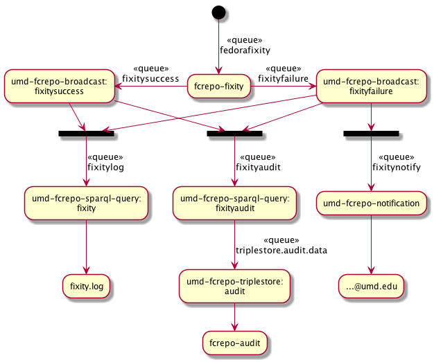

fedorafixity to the list of broadcast queuesfedorafixty queuecronPREFIX fedora: <http://fedora.info/definitions/v4/repository#>
SELECT ?sub WHERE {
?sub a fedora:Binary ;
fedora:lastModified ?timestamp .
} ORDER BY ?timestampPREFIX premis: <http://www.loc.gov/premis/rdf/v1#>
SELECT ?resource WHERE {
?event premis:hasEventType <http://id.loc.gov/vocabulary/preservation/eventType/fix> ;
premis:hasEventRelatedObject ?resource ;
premis:hasEventDateTime ?timestamp .
} ORDER BY ?timestampPREFIX premis: <http://www.loc.gov/premis/rdf/v1#>
PREFIX xs: <http://www.w3.org/2001/XMLSchema#>
SELECT ?resource
WHERE {
{
SELECT ?resource (MAX(?date) AS ?most_recent_date)
WHERE {
SELECT ?resource ?date
WHERE {
?event premis:hasEventRelatedObject ?resource ;
premis:hasEventType <http://id.loc.gov/vocabulary/preservation/eventType/fix> ;
premis:hasEventDateTime ?date .
}
}
GROUP BY ?resource
}
FILTER (?most_recent_date < "$TIMEBOX"^^xs:dateTime)
}
ORDER BY ASC(?most_recent_date)log "Checking a maximum of $MAX_CANDIDATES resources with fixity checks \
no more recent than $TIMEBOX"
head -n "$MAX_CANDIDATES" <(./all_fcrepo_uris_without_fixity.sh) > candidates.txt
# use redirection so the filename doesn't get output
count=$(wc -l <candidates.txt)
if [ "$count" -lt "$MAX_CANDIDATES" ]; then
extra=$((MAX_CANDIDATES - count))
# ensure that we are only getting resources that actually still exist
./all_fcrepo_uris_with_fixity_timeboxed.sh "$TIMEBOX" \
| grep -F -f <(./all_fcrepo_uris_in_fuseki.sh) \
| head -n "$extra" \
>> candidates.txt
fi
log "Found $(wc -l <candidates.txt) resources for fixity checking"
if [ -z "$DRY_RUN" ]; then
tr -d "\r" <candidates.txt | ./fixitycheck.sh
fi